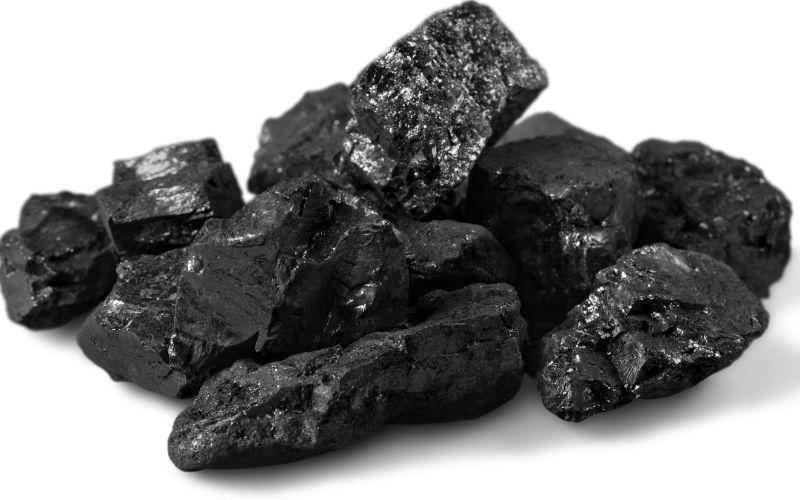

Carbono
El carbono (Z=6) es un elemento no metálico con una configuración electrónica 1s² 2s² 2p², cuya capacidad para formar enlaces covalentes múltiples le otorga una versatilidad estructural excepcional. Su hibridación sp, sp² y sp³ permite la existencia de alótropos con propiedades físicas radicalmente distintas, como el grafito (estructura laminar, excelente conductor eléctrico), el diamante (estructura tetraédrica, dureza máxima conocida en materiales naturales), y los nanomateriales (grafeno, fullerenos, nanotubos), esenciales para aplicaciones de frontera. Industriales y tecnológicamente, el carbono es indispensable en:
- Metalurgia: como agente reductor en la producción de acero y ferroaleaciones.
- Energía: en forma de carbono amorfo o grafito sintético, para ánodos en baterías de ion-litio, supercapacitores y celdas de combustible.
- Materiales compuestos: fibras de carbono reforzadas con polímeros (CFRP), utilizadas en sectores aeroespacial, automotriz y deportivo por su relación resistencia/peso insuperable.
- Electrónica: el grafeno y los nanotubos de carbono ofrecen conductividad superior y potencial para sustituir al silicio en circuitos integrados.
- Industria química: catalizadores a base de carbono activado, soportes estructurales y adsorbentes de alta superficie específica (>1000 m²/g).
Además, su estabilidad térmica y resistencia química lo convierten en un material idóneo para ambientes extremos. Invertir en carbono es apostar por la base estructural de la próxima generación de tecnologías industriales.
← Volver a la galería